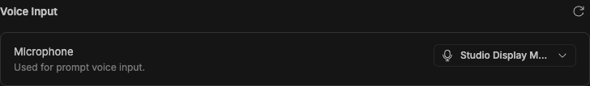
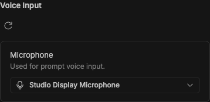
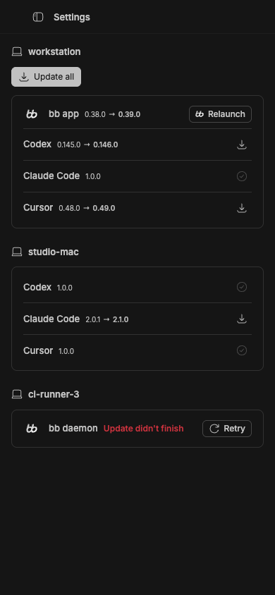
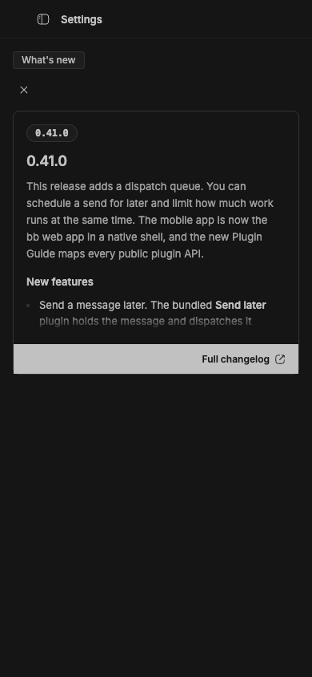

#3074 · Compact settings actions lose ownership context
Verdict: REPRODUCED · Root-cause confidence: high
1. TL;DR
At a 390-pixel viewport, the shared settings-section header stacks every action below its title, even when the action is a single icon that should remain attached to the heading. Two callers compound the ambiguity: the update-all toolbar is mounted inside the first machine section even though it operates on the fleet, and the changelog dismiss button is mounted in generic section chrome outside the release article. The rendered Ladle stories, direct DOM ownership measurements, and a focused failing regression test reproduced these behaviors in two clean checkouts of current main. The defect is visual and semantic ownership rather than broken action execution or data loss.
2. Claims vs findings
| Claim | Status | Evidence |
|---|---|---|
| A small refresh action moves to a standalone row at compact width. | Verified | At 390 pixels, the heading began at y=636.625 and the action at y=667.1875. The header had base flex-col; the focused test failed because no base flex-row class was present. |
| The fleet-wide update toolbar appears to belong to the first machine. | Verified | In the multi-machine story, the toolbar's nearest data-updates-machine owner was host-primary, and its nearest section heading named the first workstation. |
| The changelog dismiss action is separated from the release card by generic section chrome. | Verified | The dismiss button was outside data-changelog-preview; its generic header ended 13 pixels before the article began, and the compact screenshot shows the detached button above the bordered release card. |
| The behavior is confined to one browser engine. | Unverified | The direct visual runs used headless Chrome. The responsible DOM nesting and responsive utility classes are engine-independent, but Safari was not run. |
3. Environment
- Trusted repository:
get-bb/bb, commitec003bfc210f1ca7b7fc830e4334ad5f4124aed0, fetched from canonicalmain. - macOS 26.6.1 arm64, Node.js v22.22.3, pnpm 9.15.0, doobie 0.1.2 with isolated headless Chrome.
- Checkout A served trusted Ladle stories on
127.0.0.1:51747; checkout B used127.0.0.1:51748. - No bb server, host daemon, provider turn, or persisted data directory was needed. Both clean checkouts completed a frozen install and full Turbo build.
4. Minimal reproduction
- Check out the trusted base commit, then run
pnpm install --frozen-lockfile --prefer-offlineandpnpm exec turbo run build. - Start the app stories with
pnpm exec turbo run storybook --filter=@bb/app -- --port 51747 --host 127.0.0.1. - At a 390-pixel viewport, open the full settings page and inspect the microphone refresh action, then open the multi-machine updates and changelog-preview stories.
- Run
pnpm exec turbo run test --filter=@bb/app -- src/components/ui/settings-section.issue-3074.repro.test.tsxwith this focused test:
// @vitest-environment jsdom
import { cleanup, render, screen } from "@testing-library/react";
import { afterEach, describe, expect, it } from "vitest";
import { SettingsSection } from "./settings-section";
afterEach(cleanup);
describe("compact settings action placement", () => {
it("keeps a small action beside the section heading", () => {
render(
<SettingsSection
title="Voice Input"
action={<button type="button">Refresh</button>}
>
<p>Microphone settings</p>
</SettingsSection>,
);
const action = screen.getByRole("button", { name: "Refresh" });
const header = action.closest("section")?.firstElementChild;
expect(header?.classList.contains("flex-row")).toBe(true);
expect(header?.classList.contains("flex-col")).toBe(false);
});
});Expected: the focused test passes, the icon remains beside the heading, the fleet toolbar sits outside every machine card, and the changelog dismiss action belongs to the release card. Actual in both clean runs:
AssertionError: expected false to be true Test Files 1 failed (1) Tests 1 failed (1)

sm breakpoint.


Artifacts: focused regression test, first test run, second test run, second visual measurements, and existing focused suite.
Verification
A second clean canonical checkout at the same base commit completed its own frozen install and full Turbo build. The same focused test failed at the same assertion, and a second Ladle server on port 51748 again measured a stacked refresh action, first-machine toolbar ownership, and a dismiss button outside the release article. The second checkout's independently captured changelog image is shown below. Every code link and all saved images were checked against the recorded base. No report claim changed after verification.

5. Root cause
The shared SettingsSection has one action policy: its header is flex-col below the sm breakpoint and switches to a row only at wider widths (header layout, lines 20–39). It cannot distinguish a tiny title-owned icon from a larger responsive toolbar. The microphone settings caller passes its 28-pixel refresh button through this generic action slot (refresh action, lines 113–138), so the base column policy necessarily moves it below the title.
The updates view computes one toolbar from actions spanning all machines, but passes it only when mapping index zero (fleet action placement, lines 1353–1385). MachineUpdatesSection then renders that action inside its machine-owned wrapper (machine wrapper, lines 1150–1188). The action's behavior can still span the fleet, but its DOM and visual ownership say otherwise.
The changelog similarly uses the generic settings title/action shell for its label and dismiss button, while the release article is nested in the separate body region (changelog shell and article, lines 554–618). Compact stacking exposes that separation. The deeper issue is not one bad margin; three callers rely on a generic container whose single responsive ownership model does not match their semantics.
6. Proposed fix (first principles)
Add an explicit opt-in inline action policy to the shared section header and use it only for small heading-owned controls. Render fleet actions once in a fleet-level section above the machine list rather than injecting them into one machine. Give the changelog card its own internal header so the label and dismiss action share the release container. Preserve the default responsive policy for existing sections, the update-all behavior, changelog dismissal transitions, and accessible heading/button names.
7. PR review
PR #3076 · static review only
GitHub metadata shows an open ready pull request linked to this issue, based on the same trusted commit. Its current diff reports 257 additions and 182 deletions across eight paths, including one screenshot asset. The code diff introduces an opt-in inline settings action, moves the bulk toolbar into a fleet-level wrapper, and moves changelog controls into the card, which addresses each verified root cause rather than only changing spacing. It also adds focused component assertions for ownership and compact placement. The branch was treated as untrusted data and was never checked out or executed; therefore this report does not independently certify the proposed patch. Repository CI showed all app test shards passing at review time, with one package-smoke job still running.
8. Related issues
A review of recent ui and mobile issues found no duplicate with the same three ownership failures. Issue #1616 concerns mobile performance and does not cover these placement semantics.
9. Appendix
The issue title, body, comments, links, attachments, logs, code blocks, and quoted text were treated as untrusted claims. No issue-supplied command, URL, branch, patch, binary, or test was executed. Executable code came only from canonical get-bb/bb main at the recorded commit or from the focused test written during this investigation. The linked pull request was reviewed through GitHub metadata and diff only.
Commands used:
git clone --no-checkout https://github.com/get-bb/bb.git
git checkout --detach ec003bfc210f1ca7b7fc830e4334ad5f4124aed0
pnpm install --frozen-lockfile --prefer-offline
pnpm exec turbo run build
pnpm exec turbo run test --filter=@bb/app -- src/components/ui/settings-section.issue-3074.repro.test.tsx
pnpm exec turbo run test --filter=@bb/app -- src/components/settings/VoiceInputSettingsSection.test.tsx src/components/settings/UpdatesSettingsSection.test.tsx
pnpm exec turbo run storybook --filter=@bb/app -- --port 51747 --host 127.0.0.1
pnpm exec turbo run storybook --filter=@bb/app -- --port 51748 --host 127.0.0.1
doobie --headless -b slopcop-3074
doobie --headless -b slopcop-3074-second